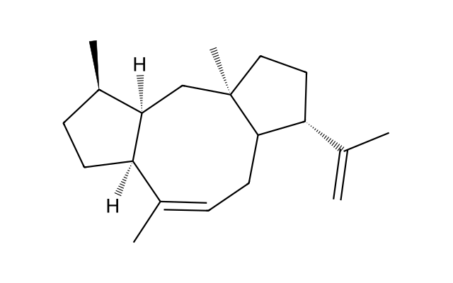
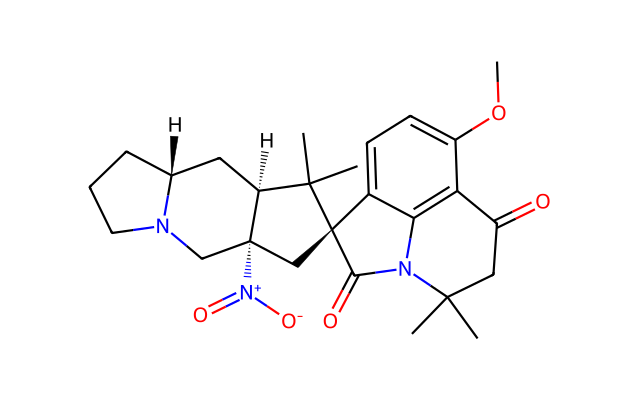
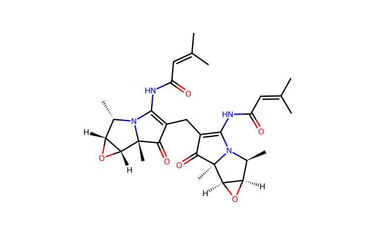

Retrosynthesis replay gallery
从 Strategy 到 Route，回放每一次模型决策
三个真实的 25-step smoke 案例，保留 Strategy Builder、Critic、Editor 与 Host replay 的完整时间线。进入任一案例即可拖动路线树、滚轮缩放、逐帧播放，并点击反应方块查看详细信息。
可拖动路线画布模型交互逐帧重放AIz / 大模型步骤标注离线自包含页面
路线案例
选择一个目标分子，进入与实时站一致的路线树重放画布。

SYNTHEX FIG.1 · CASE 01complete
5–8–5 稠合碳环骨架
三条差异化策略覆盖环闭合复分解、骨架重排与串联环化路线。
C=C(C)[C@H]1CC[C@]2(C)C[C@@H]3[C@H](C)CC[C@@H]3/C(C)=C\CC12138重放帧
76模型调用
23/19/15分支步骤

SYNTHEX FIG.1 · CASE 02complete
含硝基多环生物碱骨架
保留三条策略树与两条 paper-equivalent 完整路线的全过程记录。
COc1ccc2c3c1C(=O)CC(C)(C)N3C(=O)[C@@]21C[C@@]2([N+](=O)[O-])CN3CCC[C@@H]3C[C@H]2C1(C)C151重放帧
79模型调用
21/17/19分支步骤

SYNTHEX FIG.1 · CASE 03occurrence fixed
双环氧桥连含氮骨架
采用 occurrence 修复后的最新保存状态，展示 231 帧完整模型交互与路线物化。
CC(C)=CC(=O)NC1=C(CC2=C(NC(=O)C=C(C)C)N3[C@@H](C)[C@H]4O[C@H]4[C@@]3(C)C2=O)C(=O)[C@]2(C)[C@@H]3O[C@@H]3[C@H](C)N12231重放帧
88模型调用
21/22/10分支步骤